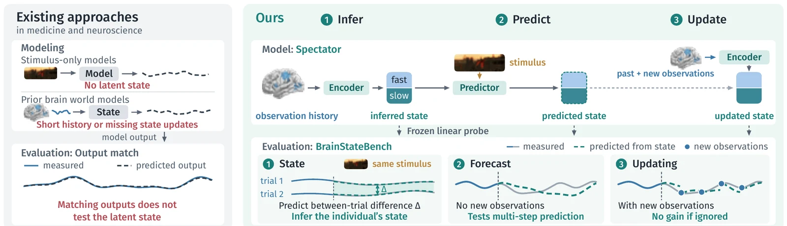

A world model of one person's brain. Spectator infers a two-timescale state from 3 minutes of fMRI, rolls it forward under the movie, and updates it when new scans arrive.
Matching the output does not test the state
Watch the same movie twice and your brain responds differently each time: the stimulus is identical, your state of mind is not. Standard encoding metrics cannot tell whether a model tracks that state, because matching the shared stimulus response already scores high—even for models that never read the brain.
We cast naturalistic fMRI as a world-modeling loop—where the movie is the action, fMRI is the observation, and the latent state tracks individual dynamics—and introduce BrainStateBench alongside Spectator, a two-timescale linear world model trained with a JEPA objective.

Figure 1. Prior encoders keep no brain state or skip updates (left). Spectator infers, predicts, and updates a two-timescale state, which BrainStateBench probes directly (right).
BrainStateBench: three tests of the latent state
A frozen linear probe maps each model's latent state to 1,000 cortical parcels, scoring variance explained (%) over 60 s rollouts on Algonauts 2025 (~66 h of movie fMRI across four viewers).
Switch tasks, models, and networks — every curve is real held-out fMRI and saved forecasts from the median-scoring query.
Spectator: a linear latent world model
The encoder turns the last 7.5 s of fMRI into a 1,024-d fast state ft and pools 3 minutes of fast states into a 1,024-d slow state ut via learned lag weights; a linear predictor advances st = [ft; ut] under multimodal movie features:
ft = Wf [xt−4; …; xt] + bffast state · last 7.5 sut,i = Σℓ wiℓ ft−ℓ,islow state · 180 s learned lagsŝt+1 = ŝt + W [ŝt; āt+1; 1]linear latent rolloutWe pretrain the encoder on fMRI, train both components with a 40-step EMA-target JEPA loss, then freeze the encoder and solve W in closed form via ridge regression.

Every forecast splits in two
Exact linear decomposition. Every k-step forecast equals Mkst (carried-forward state) plus accumulated stimulus drive. Bar shares span all held-out Algonauts recordings.
Spectator leads every baseline, and the lead grows with history
Evaluated against six baselines across four families—stimulus-only encoders (TRIBE v2, MIRAGE), a per-lead linear forecaster, Kalman state-space modeling (IPSID), and prior brain world models (NeuroWorld, BrainVista)—on Algonauts 2025 and 184-viewer HCP 7T.
BrainStateBench scores
Algonauts 2025 & HCP 7T leaderboard. Toggle dataset, metric, and history length (HCP 7T: 184 viewers on a different 7T scanner, 180 s history).
5-minute open-loop stability
201 steps · no scansData efficiency (10% → 100%)
Long-horizon stability & sample efficiency. Left: Spectator stays above movie-only across a full 5-minute rollout while a Transformer counterpart diverges below 0% at 143 s. Right: with just 10% data (4.7 h), Spectator already beats the 100%-data linear forecaster on State and Updating.
Break one input and watch which scores move
Keeping Spectator fixed, we perturb one input at test time: drop the stimulus, zero the fMRI, or swap in another viewer's fMRI from the same scene. Each perturbation leaves a distinct signature on BrainStateBench while correlation r barely moves.
Input perturbation lab (Table 3). One input altered at a time; vertical marks show full-input scores.
Where state and stimulus matter across cortex
Linearity splits every forecast into stimulus and state contributions across cortex. The stimulus drives shared sensory and narrative regions; the inferred state helps everywhere, most in prefrontal and parietal association cortex where viewers diverge.
Forecast gain on the left hemisphere


Gain by how much people agree
Stimulus gain tracks inter-subject correlation (r = 0.92); state gain stays at 5–7 points everywhere and exceeds stimulus gain in 59% of parcels.
Figure 4. Forecast gain from adding stimulus vs. latent state across Schaefer parcels (left) and inter-subject correlation tertiles (right).
A brain world model you can steer
Each step is one 2,048 × 2,049 matrix–vector product (5.4 ms per 60 s rollout), so the frozen Spectator model runs live in your browser. Start from sub-01's 3-minute fMRI state, switch clips, reveal scans to update the state, or swap in sub-02's history.
spectator-v1 weights at fp16 (≤ 0.0005 z from full precision) on two held-out recordings (Friends & The Wolf of Wall Street) with precomputed TRIBE v2 features.Stimulus
Interact
Playback
Live simulator. fsaverage5 inflated cortex (Schaefer 1,000 parcels); drag to rotate, hover to inspect parcels, click to plot that network. Video frames are omitted for copyright (bars show movie-feature change). Data: CNeuroMod / Algonauts 2025 (CC0); features: TRIBE v2 (CC BY-NC 4.0).
BibTeX
@inproceedings{stateofmind2026,
title = {State of Mind: Learning and Evaluating World Models
of Naturalistic Brain Dynamics},
author = {Anonymous},
booktitle = {Under review},
year = {2026}
}